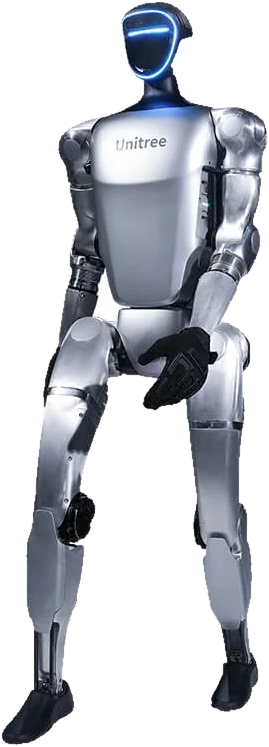

Di che materiale è la nuova linea?
Alluminio riciclato al 70 per cento, lavorato a Brescia.Fonte: scheda prodotto approvata dal cliente il 12.10
E il prezzo?
Non è nella mia base di conoscenza. Ti accompagno da Marta, al banco.Risposta fuori copione prevista in prova generale